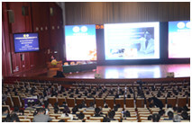
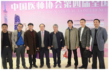
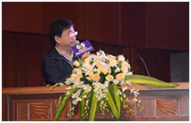

"武总综合鼻整形技术"闪耀"中国医师协会第四届全国鼻整形美容大会"
2016最尖端创新技术·立体美学隆鼻术
李希军博士 在中国医师协会第四届全国鼻整形美容大会会后接受媒体时表示，中国整形技术实力崛起，其多项整形技术实力已领先亚洲比肩欧美，但是另一方面，中国的"三非整形"现象严重。"纵观医美行业现状，造成求美者整形失败的原因主要是非法的医疗机构所造成的，非法的医生、以及非法的材料造成的。李希军博士表示，结合本次大会主题，以鼻整形为例，鼻整形是材料选择和各项技术的综合运用。武警立体美学隆鼻，就是采用自体组织"鼻中隔"、"耳软骨"、"肋软骨"与假体或膨体结合，按照求美者的美鼻要求及五官特性对鼻型精微整体式重塑，来改变鼻部结构，调整整体框架，以达到综合鼻整形的美鼻目的。

- 
- 


- 